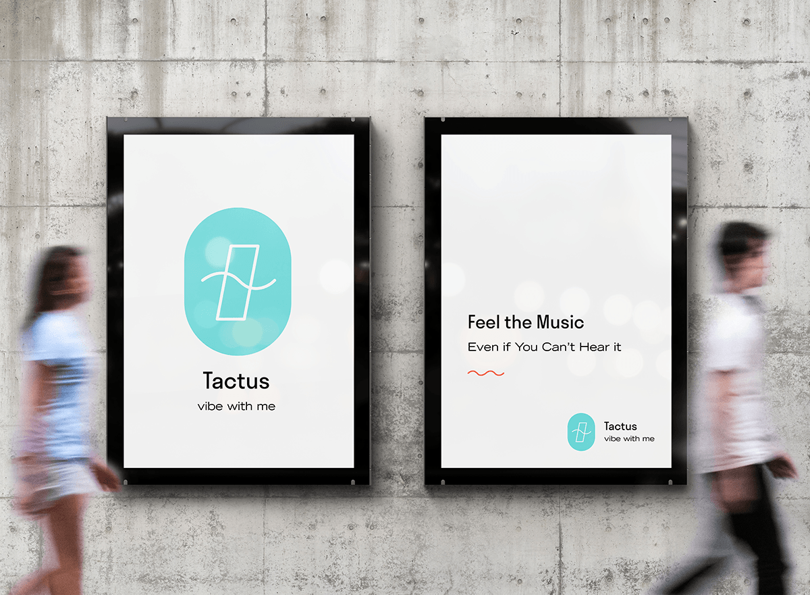
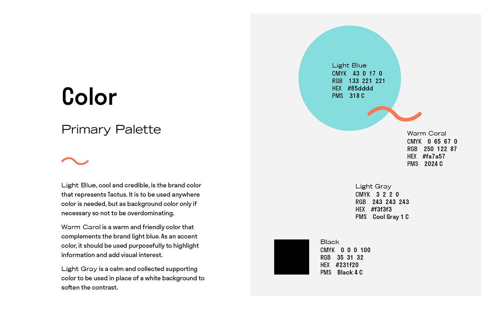
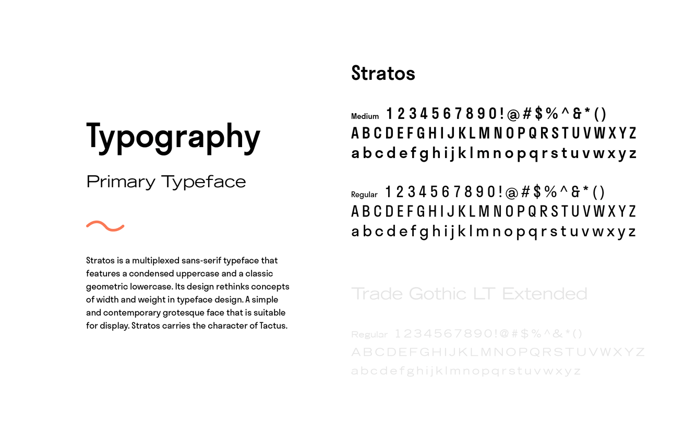

Tactus is a startup that specializes in a light-weight vest designed for people with hearing disabilities, inspired by a dancer who choreographs by feeling the rhythm on a loudspeaker. The vest translates audio signals into vibrations, so that everyone can enjoy music tactually and unrestricted by audial capabilities.



Pages from Brand Guideline detailing brand color palette and typography